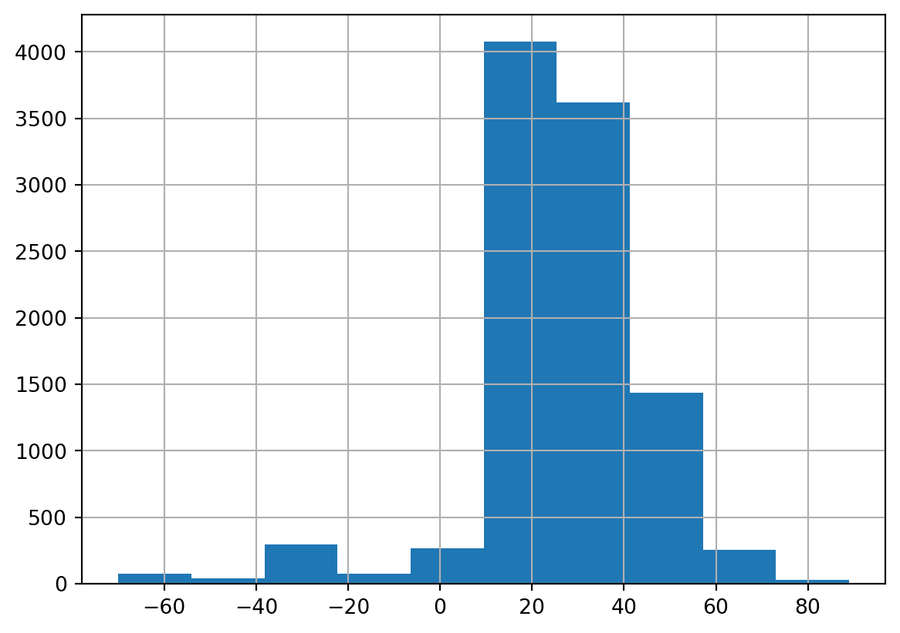
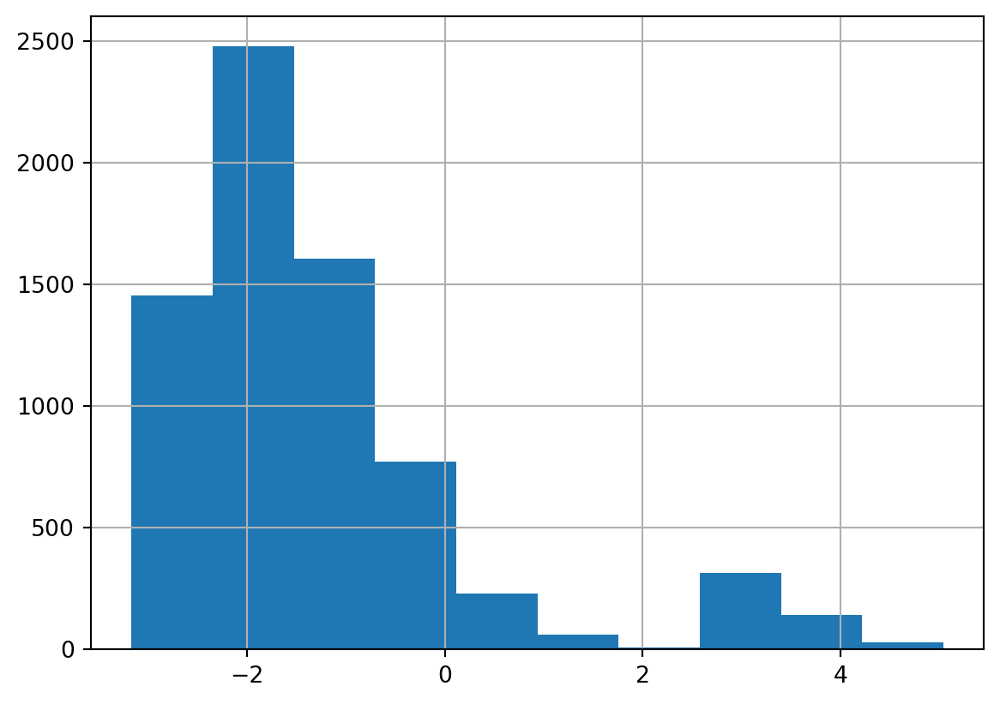

End Activity Session (Day 4)
Code
url = 'https://ucsb.box.com/shared/static/dnnu59jsnkymup6o8aaovdywrtxiy3a9.csv'
This end-of-day session is focused on using pandas for loading, visualizing, and analyzing marine microplastics data. This session is designed to help you become more comfortable with the pandas library, equipping you with the skills needed to perform data analysis effectively.
The National Oceanic and Atmospheric Administration, via its National Centers for Environmental Information has an entire section related to marine microplastics – that is, microplastics found in water — at https://www.ncei.noaa.gov/products/microplastics.
We will be working with a recent download of the entire marine microplastics dataset. The url for this data is located here:
url = 'https://ucsb.box.com/shared/static/dnnu59jsnkymup6o8aaovdywrtxiy3a9.csv'Objective: Write your own notebook that contains a simple DataFrame exploration as well as some basic grouping, filtering, and aggregation, and visualization… all within the pandas library.
Objective: Learn to load data into a pandas DataFrame and display the first few records.
import pandas as pddf from the provided URL into a pandas DataFrame.I’ve already taken a look at this data set and noticed there was a column with sample date called Date. We can use the parse_date option of the read_csv() function to convert values in the Dates column of the csv into datetime objects in pandas while reading the file.
df = pd.read_csv(url, parse_dates=['Date'], date_format='%m/%d/%Y %I:%M:%S %p')print(df.head()) OBJECTID Oceans Regions SubRegions Sampling Method Measurement \
0 10008 Atlantic Ocean NaN NaN Grab sample 0.020000
1 8680 Atlantic Ocean NaN NaN Grab sample 0.008000
2 13257 Pacific Ocean NaN NaN Manta net 0.019886
3 9676 Atlantic Ocean NaN NaN Grab sample 0.018000
4 6427 Pacific Ocean NaN NaN Neuston net 0.000000
Unit Density Range Density Class Short Reference ... \
0 pieces/m3 0.005-1 Medium Barrows et al.2018 ...
1 pieces/m3 0.005-1 Medium Barrows et al.2018 ...
2 pieces/m3 0.005-1 Medium Faure et al.2015 ...
3 pieces/m3 0.005-1 Medium Barrows et al.2018 ...
4 pieces/m3 0-0.0005 Very Low Law et al.2014 ...
Organization Keywords \
0 Adventure Scientist Adventure Scientist/Citizen Science
1 Adventure Scientist Adventure Scientist/Citizen Science
2 Oceaneye Association, Switzerland Oceaneye Association; Citizen Science
3 Adventure Scientist Adventure Scientist/Citizen Science
4 Sea Education Association SEA
Accession Number Accession Link \
0 211009 https://www.ncei.noaa.gov/access/metadata/land...
1 211009 https://www.ncei.noaa.gov/access/metadata/land...
2 276422 https://www.ncei.noaa.gov/access/metadata/land...
3 211009 https://www.ncei.noaa.gov/access/metadata/land...
4 211008 https://www.ncei.noaa.gov/access/metadata/land...
Latitude Longitude Date GlobalID \
0 -58.428300 -64.1640 2017-02-03 1e5b8e71-037b-4887-a276-f1e4552acb1f
1 -51.308200 -60.5467 2013-11-17 a40f7f7c-1025-4aac-ad16-ee4cba196870
2 -51.826667 -72.5750 2015-12-26 febf79b8-7e2c-46e6-bc15-e08492ec2029
3 -31.696000 -48.5600 2015-08-11 a77121b2-e113-444e-82d9-7af11d62fdd2
4 6.350000 -121.8500 2002-12-18 be27c450-02ca-4261-8d89-cae21108e6cc
x y
0 -64.1640 -58.428300
1 -60.5467 -51.308200
2 -72.5750 -51.826667
3 -48.5600 -31.696000
4 -121.8500 6.350000
[5 rows x 22 columns]summary_statistics = df.describe()
print(summary_statistics) OBJECTID Measurement Accession Number Latitude \
count 16245.000000 10453.000000 16245.000000 16245.000000
mean 11167.305263 225.807370 239277.512096 27.726941
min 1.000000 0.000000 170967.000000 -69.992100
25% 4062.000000 0.000000 211007.000000 22.200000
50% 11871.000000 0.008000 259486.000000 28.780300
75% 17758.000000 0.060476 259486.000000 33.950063
max 22338.000000 110480.000000 285700.000000 88.961300
std 7138.627239 2597.118472 27283.260088 15.479316
Longitude Date x y
count 16245.000000 16245 16245.000000 16245.000000
mean -73.294063 2010-11-14 22:16:49.196675584 -73.294063 27.726941
min -131.289250 1972-04-25 00:00:00 -131.289250 -69.992100
25% -94.823300 2000-05-16 00:00:00 -94.823300 22.200000
50% -77.390000 2015-11-17 00:00:00 -77.390000 28.780300
75% -63.680000 2020-01-27 00:00:00 -63.680000 33.950063
max 5.596789 2022-11-30 00:00:00 5.596789 88.961300
std 28.652511 NaN 28.652511 15.479316 Oceans~ to invert built-in function results
The ~ operator inverts a list of Boolean values (switches True to False and vice versa).
This operator isn’t useful for most selection operations because you can just use == and != to invert selection criteria. However, the ~ operator becomes very handy when there is a need to invert the results of a built-in function.
For example, the use of the ~ operator and isnull() combine to create an efficient way to filter dataframes where the value of a df[column] is not isnull():
df_valid = df[~(df['column'].isnull())].copy()Note that the results of the built-in function - df['column'].isnull() need to be wrapped in ( ) for the ~ operator to work properly.
print("DataFrame info:",df.info())
df.isnull().sum()
df = df[~df['Oceans'].isnull()]
print("\nNumber of missing values of Oceans:",df['Oceans'].isnull().sum())<class 'pandas.core.frame.DataFrame'>
RangeIndex: 16245 entries, 0 to 16244
Data columns (total 22 columns):
# Column Non-Null Count Dtype
--- ------ -------------- -----
0 OBJECTID 16245 non-null int64
1 Oceans 15974 non-null object
2 Regions 7996 non-null object
3 SubRegions 588 non-null object
4 Sampling Method 16245 non-null object
5 Measurement 10453 non-null float64
6 Unit 16245 non-null object
7 Density Range 16245 non-null object
8 Density Class 16245 non-null object
9 Short Reference 16245 non-null object
10 Long Reference 16245 non-null object
11 DOI 16245 non-null object
12 Organization 16245 non-null object
13 Keywords 16227 non-null object
14 Accession Number 16245 non-null int64
15 Accession Link 16245 non-null object
16 Latitude 16245 non-null float64
17 Longitude 16245 non-null float64
18 Date 16245 non-null datetime64[ns]
19 GlobalID 16245 non-null object
20 x 16245 non-null float64
21 y 16245 non-null float64
dtypes: datetime64[ns](1), float64(5), int64(2), object(14)
memory usage: 2.7+ MB
DataFrame info: None
Number of missing values of Oceans: 0oceans that groups the data in df according to the value of the Oceans column.oceans = df.groupby(['Oceans'])print(oceans['Measurement'].count())Oceans
Arctic Ocean 69
Atlantic Ocean 9314
Pacific Ocean 1050
Southern Ocean 20
Name: Measurement, dtype: int64print(oceans['Measurement'].mean())Oceans
Arctic Ocean 1.916192
Atlantic Ocean 202.347671
Pacific Ocean 452.918721
Southern Ocean 0.068133
Name: Measurement, dtype: float64pieces/m3df2 = df[df['Unit'] == 'pieces/m3']# Instructor code
print(df2.groupby(['Oceans'])['Measurement'].max())Oceans
Arctic Ocean 63.000000
Atlantic Ocean 110480.000000
Pacific Ocean 21156.558533
Southern Ocean 0.499663
Name: Measurement, dtype: float64df2['Latitude'].hist()
df3) from your filtered dataframe (df2) that contains only rows where Measurement is greater than zero.Using .copy() when filtering a dataframe ensures that you’re working with a new DataFrame, not a view of the original. This is especially important when you’re filtering data and then modifying the result, which is common in data science workflows.
df3 = df2[df2['Measurement'] > 0].copy()df3 that contains the log10 of Measurements.The numpy library has a log10() function that you will find useful for this step!
import numpy as np
df3['log10Measurement'] = np.log10(df3['Measurement'])df3df3['log10Measurement'].hist()
🎉 Congratulations, you’re officially doing python data science! 🎉
Be sure to save your notebook and add comments and reflections at the end of your notebook before heading out for the day.
End Activity Session (Day 4)